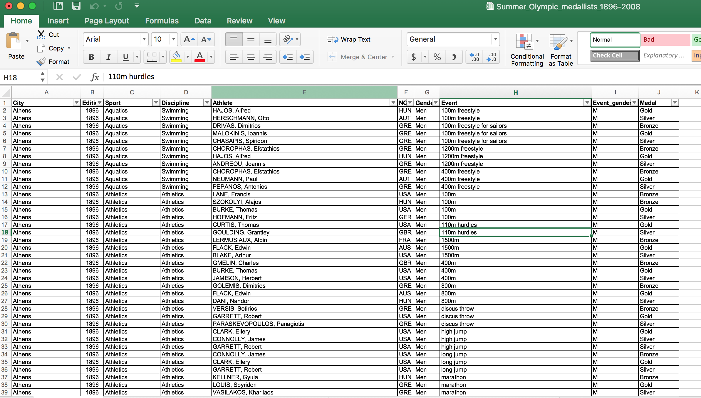
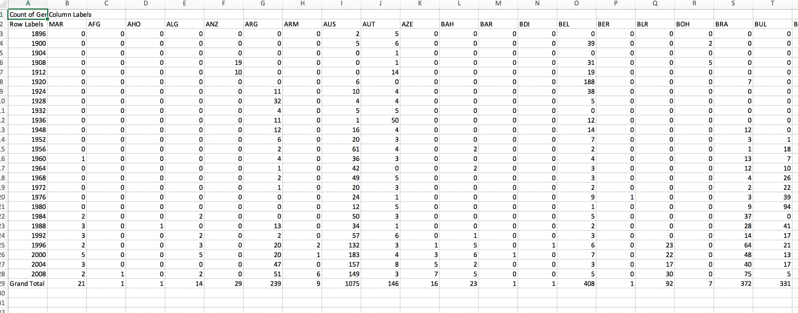

Our Story
For this homework we decided to reuse the dataset we used for homework 2. We
both found this dataset very interesting and gained a lot of insight from the
exploratory analysis we performed in Tableau. The Olympics are divided by
countries and we wanted to learn more about how many medals each country produces each year.
We decided to visually encode our data into stacked charts because we thought
this effectively displayed the difference between the total number of medals earned each year
and how many were earned by each country. Different colors were used to encode the nominal
data of the countries because they are each distinct, different, and can’t be ordered. Then once
the user clicks on a particular country, more information regarding how many medals they have earned is
shown through an area chart.
We faced a few difficulties during this assignment. First we realized that we need to
change how our Excel dataset was organized. We performed some exploratory analysis on
this dataset in Excel to determine the best way to reorganize the dataset. Below we added pictures of the dataset we
started with and the one we obtained after manipulating the data. The biggest challenege we faced was
figuring out different interactive ways to display clear data. We found ourselves not being able to find sources to aid
us in this assignments.
Starting Data Manipulated Data
 